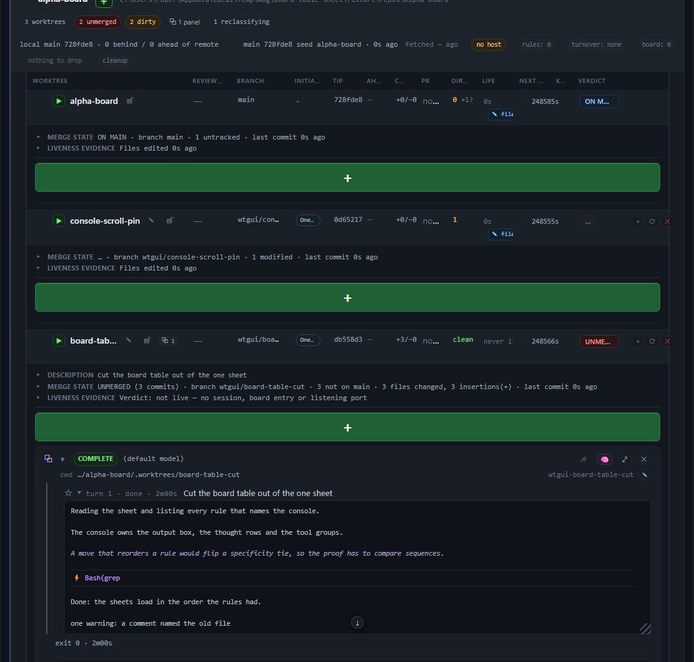
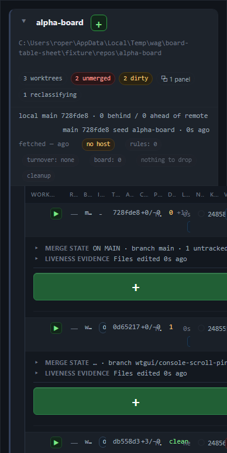

The console has its own sheets now
Row 445. Tree row-445-is-the-complete-brief-break-the-ffbf80, cut from
20261127_2134_TASK-405_row-405-is-the-complete at e873ddb0. Every number below was measured
in this tree on 2026-11-28; the command that produces each one is in section 11.
public/console.css (the card's frame, the output body, the reply composer), public/console-head.css
(the head, the session's cwd line and every head control), public/console-turns.css (the turns and the head's
model and context readout) and public/model-menu.css (the picker that readout opens). public/jobs.css
and public/turns.css are gone; public/rowstrips.css is public/utilities.css, which keeps
the eight type and status utilities that no surface owns.
What moved. 207 rules, verbatim, out of the five sheets that held them: all 86 of
jobs.css, all 64
of turns.css (35 the turns, 29 the picker), 40 of rowstrips.css (its eight utilities stayed),
11 of overlays.css and 6 of board-table.css.
Where it landed. Merged into
20261127_2134_TASK-405_row-405-is-the-complete by the merge of
wtgui/row-445-is-the-complete-brief-break-the-ffbf80; that merge is the turnover's tip. The turnover had
moved since this tree was cut (row 402's landing, lib/branch-kind.js and four test files), and the merge
carries that work unchanged; the branch is not pushed and no pull request was opened.
What proves it. The rule set is identical, not merely similar: 3,431 rule blocks before and 3,431 after, keyed by at-rule context, selector and declarations, with 0 missing and 0 extra. The cascade is identical: the same 4 (selector, property) pairs across sheets, in the same sheets, with the same winners, and the only console sheet in that list did not move. And in a real browser, with one document and the two sheet sets swapped under it, all 2,839 elements and 71 pseudo boxes compute the same style at 1160 px and at 420 px, and the captures are byte-identical.
1. The brief, checked against the tree before anything moved
The brief quotes the review at docs/reports/css-split-review-2026-11-28.html: the console is an
eight-sheet surface with 102 rules, 46 of them in console.css and 56 outside it - the reply box in
overlays.css (19), the head in jobs.css (16), the turns in turns.css (8), the thread
buttons and strips in rowstrips.css (7), the warning line in board.css (4).
Re-running the review tool against this tree's base reproduces the first number and corrects the second. The console
still draws 102 surface rules over eight sheets, but only 42 are outside console.css, because the reply
composer's 19 rules already landed there: public/console.css:877 is the bank of reply rules, and its header
says where they came from, and public/overlays.css:5 says the composer "lives in public/console.css". The
brief's 56 is that stale count.
| sheet at the base | console rules it held | what they are |
|---|---|---|
jobs.css | 16 | the head, the cwd line, the pipeline chip, the status pill, the pin and think buttons |
turns.css | 8 | the turn, its head, the chevron, the inline prompt |
rowstrips.css | 7 | the agent mark, the clear-thread and rename buttons, the console's box insets - and four of the eight utilities (.mono, .dim, .dimmer, .nowrap) |
overlays.css | 5 | button.btn-reply, .job-head, its chevron, button.btn-max, button.btn-star |
board-table.css | 4 | .agents-block .job-out, .warnline and the reply row's two empty-warnline rules (they were board.css's before row 444) |
base.css, chrome.css | 2 | *, the scrollbar, button, select, input, textarea and button: the page's own resets |
The review tool's per-sheet counts are taken against a live fixture, so they move with the DOM. The console root rendered 67 elements in both runs here, which is why the total is 102 on both sides; section 6 quotes the same tool's own and container measures and section 3 is the number to trust for rules.
2. What moved, and where it came from
The sheet set went from 20 links to 21. Two sheets were emptied and deleted, one was renamed, three were added, and every moved rule kept its text and its order relative to the rules it now sits beside.
| source | rules at the base | rules now | where the rest went |
|---|---|---|---|
public/jobs.css | 86 | 0, deleted | 38 to console-head.css (the head, the cwd line, the pill), 48 to console.css (the card frame, the subagent rows, two keyframe blocks) |
public/turns.css | 64 | 0, deleted | 35 to console-turns.css (the turns and the readout), 29 to model-menu.css (the picker) |
public/rowstrips.css | 48 | 8, renamed utilities.css | 21 to console.css, 18 to console-head.css, 1 (body.modal-open) to chrome.css; the 8 utilities stayed |
public/overlays.css | 266 | 255 | 2 to console.css (button.btn-reply and its hover), 9 to console-head.css |
public/board-table.css | 797 | 791 | 6 to console.css |
public/console.css | 292 | 369 | +77: 48 from jobs.css, 21 from rowstrips.css, 2 from overlays.css, 6 from board-table.css |
public/console-head.css | 0 | 65 | new: 38 from jobs.css, 18 from rowstrips.css, 9 from overlays.css |
public/console-turns.css | 0 | 35 | new: the turn family and the readout, from turns.css |
public/model-menu.css | 0 | 29 | new: the picker, from turns.css |
public/utilities.css | 0 | 8 | new: the eight type and status utilities, from rowstrips.css |
public/chrome.css | 70 | 71 | +1: body.modal-open |
Those 206 rules are all in the console's four sheets - 77 + 65 + 35 + 29 - and the one more that left a source sheet
(body.modal-open) is in chrome.css. The eight utilities never left: they stayed in place when
rowstrips.css became utilities.css. Nothing else moved: base.css,
settings.css, assistant.css, feedback.css, assistant-panes.css,
initiatives.css, panes.css, queue.css, pipeline.css,
late.css, chart.css, core/pipeline-card.css and core/task-card.css are
rule-identical.
Method
A scratch slicer (not committed) found each rule by a brace-aware scan, so a selector list spread over three lines
and a whole @keyframes block were each one unit; each moved unit was cut as the range from the end of the
previous unit in its sheet through its closing brace, so the comments between two rules travelled with the rule they
explain. Every unit's whitespace-normalized text was hashed before the cut and found again in the target after the
append: 205 units, 0 missing. Ranges are not written here because the slicer was scratch; section 11 says how the
numbers are reproduced.
Rules went into their new sheet in the order their old sheets loaded - board-table.css first, then
jobs.css, then overlays.css, then rowstrips.css - so a rule that beat another rule
inside the console still beats it. That is why public/console.css:21 is the board-table banner and
:34 the jobs one, ahead of console.css's own rules.
3. The rule set is identical, rule block for block
Every sheet the page loads was parsed with the same parser tools/verify-css-split.mjs uses, every rule
keyed by at-rule context | selector | declarations, and the multisets compared. Text, not CSSOM: a browser
drops and re-adds rules across a sheet swap, and this has to prove the files.
| measure | base e873ddb0 | this tree | verdict |
|---|---|---|---|
sheets in index.html | 20 | 21 | two deleted, one renamed, three added |
| rule blocks | 3,431 | 3,431 | equal |
| rules missing from this tree | - | 0 | none |
| rules this tree adds | - | 0 | none |
Per sheet, rule blocks before and after - the numbers that show where the 215 came from and that nothing else moved:
| sheet | before | after | sheet | before | after |
|---|---|---|---|---|---|
base.css | 13 | 13 | console-head.css | - | 65 |
chrome.css | 70 | 71 | console-turns.css | - | 35 |
settings.css | 300 | 300 | model-menu.css | - | 29 |
board-table.css | 797 | 791 | utilities.css | - | 8 |
jobs.css | 86 | - | assistant.css | 98 | 98 |
console.css | 292 | 369 | feedback.css | 226 | 226 |
turns.css | 64 | - | assistant-panes.css | 126 | 126 |
overlays.css | 266 | 255 | initiatives.css | 439 | 439 |
rowstrips.css | 48 | - | panes.css | 120 | 120 |
queue.css | 76 | 76 | pipeline.css | 263 | 263 |
late.css | 33 | 33 | chart.css | 47 | 47 |
core/pipeline-card.css | 51 | 51 | core/task-card.css | 16 | 16 |
total | 3,431 | 3,431 |
4. The cascade: no new tie, and the four that exist are untouched
Moving a rule between sheets changes what it beats. The review tool lists every (selector, property) pair that two or more sheets set, with the sheet that wins by load order, and the list is identical before and after:
| selector | props | sheets | winner | context |
|---|---|---|---|---|
.topbar | 2 | chrome.css, late.css | late.css (position, padding) | @media (max-height: 300px) |
.jl-think .think-dot | 1 | console.css, pipeline.css | pipeline.css (animation) | @media (prefers-reduced-motion: reduce) |
.shell | 1 | assistant.css, late.css | late.css (align-items) | @media (max-height: 300px) |
None of the three selectors is a console element, and the one console sheet in the list, console.css,
did not move a rule: the .jl-think .think-dot rule it holds is one of its original 292 and still loses to
pipeline.css. That is not luck. The new sheets were inserted at the index the old ones occupied - see
section 7 - and the rules inside them kept their old relative order, which is why the pairs that exist still resolve the
same way. The browser proof in section 5 is the measure that settles the rest: a same-specificity conflict between two
different selectors would not appear in this table, and it would appear there.
5. The browser proof: one document, two sheet sets
Two boots of the fixture do not render the same document: the panel's scan keeps adding and dropping chips while the
page is open, and a countdown ring redraws every second. A second boot therefore cannot prove anything about a
stylesheet. The harness (tools/verify-board-table-sheet.mjs, the one row 444 wrote and this row reuses) does
the opposite of a second boot:
- It boots the page once from this tree, seeds the fixture, expands every project and row, then freezes the document: it closes the event stream and clears every interval the page armed, and refuses to measure unless four samples of the element count agree.
- It exports the base revision with
git archive, reads the 20 sheets that page loaded, and inserts them into the live<head>as<style>elements - disabled - at the index the old sheets occupy. A disabled<link>fetches late, so the text is fetched first and each element's own sheet is disabled instead, which is synchronous. - It measures A, B, A: the base sheets, this tree's sheets, the base sheets again. If A and A do not agree the document moved under the harness and the run fails rather than claiming anything.
- For every element it records the border box and a hash of the whole computed style (with animation, transition and
stroke-dashoffset dropped, since a countdown moves without any style change, and the properties sorted, since Chromium
enumerates custom properties in an unstable order); for every element under
#projectsit keeps the full style map, so a difference names the property. The console is inside#projects, so every console element is one of the elements whose full map is kept.::beforeand::afterare measured where they have content.
| at | elements | pseudo boxes | digest: base sheets | digest: base again | digest: this tree | verdict |
|---|---|---|---|---|---|---|
| 1160 px | 2,839 | 71 | a2094b24468a5552 | a2094b24468a5552 | a2094b24468a5552 | identical |
| 420 px | 2,839 | 71 | d5ce2abb768da7ea | d5ce2abb768da7ea | d5ce2abb768da7ea | identical |
Element by element and pseudo box by pseudo box, every border box and every computed property is equal. The captures
agree with the hashes: the two files in each pair are byte-identical, cmp prints nothing.

before-1160.png, 94,271 bytes, sha256 9d1b4112.
after-1160.png, the same 94,271 bytes.

What the proof does not cover, and the names of it
The fixture draws one card, expanded, with no approval card open, no held reply and no pager. So the browser proof
covers the head, the cwd line, the pill, the subagent block, the output box, the reply composer and the turns - every
console element the fixture draws - and it does not cover the states that are drawn only when a turn asks a question,
waits for an approval, holds a reply or pages: those rules stayed in overlays.css (section 8). The rule
multiset still covers them, because it is text, but the computed style of those states is not measured here. That is the
same line row 444's report drew for the board's dormant rules.
A capture scrolls the page. The harness reads document coordinates and resets the scroll before each measurement, and the capture happens after the measurement, never before it - row 444's report records why: a scrolled reading carried a 605 px offset into every box.
6. The lane: 6 sheets to 3, or 8 to 6
The brief asks for the lane measure on both measures the review tool prints, and the two answer different questions. Both are below, with the tool's own definition quoted.
Rules the console owns (the own measure)
Rules that match the console and nothing nested inside it - the tool's own list, which is what a reader
means by "the console's rules":
| at the base | this tree |
|---|---|
| 94 rules over 6 sheets | 94 rules over 3 sheets |
console.css 57, jobs.css 16, turns.css 8, overlays.css 5, board-table.css 4, rowstrips.css 4 |
console.css 65, console-head.css 21, console-turns.css 8 |
6 sheets to 3, and the same 94 rules: the count is equal because the rules are the same rules, only their homes
changed. The 8 the tool sets aside are the page's base layer (*, button, thead th),
which no move can bring into the console.
Sheets a console lane must open (the container measure)
Every sheet with at least one rule matching an element inside the console, nested panes included:
| at the base | this tree | why the rest are still there |
|---|---|---|
| 8 sheets | 6 sheets | two are the page's resets, one is the utilities sheet |
| sheet that still matches the console | rules | the rules that put it there |
|---|---|---|
console.css | 68 | the card, the body, the subagents, the composer |
console-head.css | 21 | the head, the cwd line, the head controls |
console-turns.css | 8 | the turns |
utilities.css | 3 | .mono, .dim, .dimmer: type ink, read by every surface |
base.css | 1 | * and the scrollbar: the page's reset |
chrome.css | 1 | button: the page's own reset |
This measure reaches 6 and stops there, honestly. Three of the six are not the console's to take: the base
layer and the utilities are rules every surface reads, and moving them into a console sheet would make the console the
owner of the page's resets. What the row can say is that the console's own rules are in three sheets, and that a change
to the head opens console-head.css rather than six files.
The board's container measure dropped with it, 10 sheets to 9, because the console rules that used to sit
in jobs.css and rowstrips.css are no longer in sheets the board's lane opens; the board's own
measure is unchanged at 198 rules over 2 sheets.
7. index.html: the link order is explicit, not inherited
The page loads 21 sheets in an order it states line by line. The console's four stand where jobs.css and
turns.css stood, in the order the console draws its parts:
| line | sheet | note |
|---|---|---|
| 11 | base.css | tokens and reset |
| 12 | chrome.css | |
| 13 | settings.css | |
| 17 | board-table.css | |
| 21 | console.css | where jobs.css stood: the frame, the body, the composer |
| 22 | console-head.css | new |
| 23 | console-turns.css | where turns.css stood |
| 24 | model-menu.css | new: the picker |
| 25 | overlays.css | the popovers and the turn cards |
| 26-30 | assistant.css, feedback.css, assistant-panes.css, initiatives.css, panes.css, queue.css, pipeline.css | |
| 34 | late.css | last of the surface sheets, by design |
| 38 | chart.css | after late.css: the age column and the legend |
| 41, 45 | core/pipeline-card.css, core/task-card.css | the two cards shared with the standalone pages |
utilities.css stands where rowstrips.css stood, after overlays.css and before
assistant.css, which is where the utilities have to sit so that a single-class rule in a later sheet cannot
beat them. No @import was introduced and no sheet was concatenated: each file is still fetched on its own, so
a reader can still see which sheet a rule came from in devtools, which was the split's point.
8. What is still red, and what this row did not do
npm run verify:css-split --stream was already red, and this row did not change its reading
That gate proves the 1.191.0 concatenation: every rule of the old public/style.css, once, unedited, in
the order the sheets load. It reads 3,061 rules in the pinned file and 3,317 on the page today, with 21
lost, 0 edited, 225 borrowed from chart.css's block and 52 added, and its first order divergence at rule
76. Run at this tree's base e873ddb0 the numbers are identical: 3,317, 21 lost, 0 edited, 225, 52,
rule 76. The red is pre-existing, it is the same red, and this row neither caused nor cleared it. What this row proves
instead is section 3 (the multiset against its own base) and section 5 (the browser).
overlays.cssstill holds the console's turn cards. Its turn-approval card (~35 rules), its question card (~30), the ghost turns a held reply draws (~25), the held-reply list and the turn pager (~15) are the console's by surface and still live in the popover sheet. They are not in the brief's surface list, and the fixture never draws those states, so a browser proof could not settle them: they are the next row in this initiative, not a claim of this one. The pager and the paste chip are named for the same reason.board-table.csskeeps five rules that are about a turn card (#approval-list .turn-approvaland its head and note, and the done row). They skin the approvals dock, which is the board's own surface, so they stay.late.cssstill names#projectsin 7 rules: the narrow-window root group. They stay because "last" is their job. The review's catch-all section already says that block homes tochrome.cssandboard-table.css; doing it needs a load-order argument of its own.chart.csskeeps 47 rules: the poll ring, the age column and the legend.- The console's own measure is 3 sheets, not 1. The three are the three parts the brief names - the body, the head, the turns - and each is a file a reader can open by name. Merging them would undo the split's point.
- Version.
package.jsonreads 1.197.0, unchanged by this row, as the brief asked. No push and no pull request.
9. The console's sheets, in one paragraph
public/console.css is the console's frame and body: the card and its last-child border, the session
block, the subagent rows, the running pulse and stuck-turn chip, the output box and its grip, the markdown prose, the
raw and focus views, the tool-call groups, the thought rows, the diff and code blocks, the command card, the stats
readout, the warning line, and the reply composer with its action row and its container query. public/console-head.css
is its head: the title and meta line, the cwd line and the session's name, the pipeline chip, the status pill, and the
pin, think, collapse, maximize, star, rename, clear-thread and attach controls. public/console-turns.css is
its turns: the rail, the head and chevron, the inline prompt, the peek and compact forms, the origin chips, the live
clock and the head's model and context readout. public/model-menu.css is the picker that readout opens. The
four hold 498 of the page's 3,431 rule blocks between them, and every one of those rules computes exactly what it
computed in the sheets it came from.
10. What the suite answered
The tests that read the page's sheets are the ones this move can break, so all of them were run: 59 test files that
import test/style-sheets.js or name a .css file, 714 tests, 714 pass, 0 fail. The full
suite was not run for this cut: the brief asked for the move and its proof, and the focused set is what a stylesheet move
can fail.
| run | tests | pass | fail | what it covered |
|---|---|---|---|---|
node --test over the 59 sheet-reading files | 714 | 714 | 0 | every CSS assertion in the project: the legend, the row chips, the command card, the console box, the reply container, the report footer, the settings glossaries, the pipeline cards |
Two failures that are not this row's, named so they are not read as green: test/absolute-paths.test.js
allows four files that arrived with the base (three other rows' reports and tools/capture-wave-lane-options.mjs),
and test/gateway-permissions.test.js reads a config.json this worktree does not have. Neither
touches a sheet.
11. Reproduce every number
git show e873ddb0:public/*.css and the working tree with parseRules from tools/verify-css-split.mjs, keys each rule as ctx|selector|declarations and compares the multisetsnode tools/verify-board-table-sheet.mjs --old e873ddb0 - exits 0 and prints PASS at both widthsnpm run review:css-split - sections 6 and 4 of its outputnpm run verify:css-split -- --stream - red at the base too, see section 8node --test over the 59 files that import test/style-sheets.js or name a .css filesha256sum docs/reports/console-sub-sheets/*.png - before-1160.png and after-1160.png hash equal, as do the 420 pairThe four captures in docs/reports/console-sub-sheets/ are the ones the harness wrote, copied
unchanged. The report itself has no script, no fetch and no build step: it opens from disk.